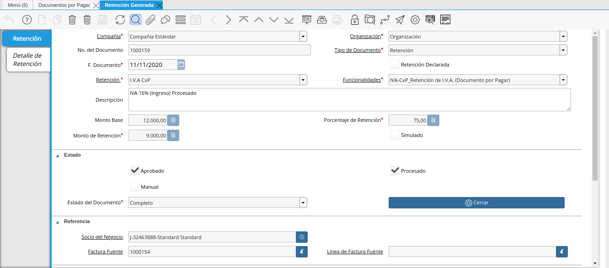

Configuración Esencial de la Retención Municipal¶
ADempiere permite seleccionar por socio del negocio la retención municipal a aplicar en los documentos de compra/venta del mismo, a continuación se explica el procedimiento para seleccionar la retención municipal en un socio del negocio determinado.
Ubique en el menú de ADempiere la carpeta “Relación con Socios del Negocio”, luego seleccione la carpeta “Reglas de Socios del Negocio”, por último seleccione la ventana “Socio del Negocio”.
Imagen 1. Menú de ADempiere

Ubique el socio del negocio proveedor al cual se le va a configurar la retención municipal, para este ejemplo el socio del negocio proveedor es “Standard Standard”.
Imagen 2. Socio del Negocio

En la ventana principal “Socio del Negocio” verifique que en el campo “Tipo de Persona” se encuentre seleccionado el tipo de socio del negocio al que se le aplicará la retención municipal, en este campo debe indicar si el socio es persona jurídica domiciliada, persona jurídica no constituída domiciliada, persona jurídica no domiciliada, persona natural no residente, persona natural residente.
Imagen 3. Campo Tipo de Persona

Seleccione la pestaña “Proveedor” para configurar la retención municipal a aplicar al socio del negocio.
Imagen 4. Pestaña Proveedor

Ubique en la parte inferior del documento los checklist para definir las retenciones a aplicar a un socio del negocio proveedor.
Imagen 5. Retenciones
Note
Al tildar el checklist en los campos de retenciones ubicados en la parte inferior del documento, significa para ADempiere que no se aplicará dicha retención seleccionada al socio del negocio.

Para realizar este ejemplo de la retención municipal y observar el comportamiento de los checklist en ADempiere, se tildan los checklist referentes a retención de IVA y ISLR.
Imagen 6. Checklist Retenciones
Warning
Solo debe tildar la retención que no se aplicará al socio del negocio proveedor que esta configurando.

Seleccione la actividad comercial en el campo “Actividad Comercial”, esta va a depender de la actividad que realice el proveedor y para este ejemplo la actividad es “Las Compras, Servicios y Suministros Prestados”.
Imagen 7. Campo Actividad

Seleccione la tasa de retención municipal en el campo “Tasa de Retención Municipal”, esta tasa va a depender del municipio donde se encuentre el cliente y para este ejemplo la tasa es “1.5”.
Imagen 8. Campo Tasa de Retención Municipal

Warning
Guardar los cambios realizados en el socio del negocio con ayuda del icono “Guardar Cambios” de la barra de herramientas de ADempiere.
Ejecución de la Estimación de Retenciones¶
Ubique la factura ya realizada al socio del negocio, la misma debe estar en estado “Completo”, para este ejemplo se utiliza la factura número “1000037” del socio del negocio proveedor “Standard Standard”.
Imagen 9. Factura Aplicada al Socio del Negocio

Seleccione el icono “Visualiza Detalle” en la barra de herramientas para apreciar donde es usado el documento, en este caso la factura.
Imagen 10. Icono Visualiza Detalle

Podrá apreciar el menú desplegado por el icono “Visualiza Detalle”, el mismo muestra los documentos donde es utilizada la factura.
Imagen 11. Menú del Icono Visualiza Detalle
La opción “Socio del Negocio” muestra el documento del socio del negocio utilizado en la factura número “1000037” seleccionada para el ejemplo, puede ser utilizada para corroborar que las retenciones aplicadas a la factura sean las mismas configuradas para el socio del negocio.
Imagen 12. Opción Socio del Negocio
La opción “Retención Generada” muestra el documento de retención aplicado a la factura número “1000037” seleccionada para el ejemplo.

Imagen 13. Opción Retención Generada
La opción “Log de Retención” muestra el log de la retención no aplicada a la factura número “1000037” seleccionada para el ejemplo.
Imagen 14. Opción Log de Retención


Warning
ADempiere le genera al usuario por medio del icono “Visualiza Detalle”, las alertas donde indica cuales fueron las retenciones aplicadas (Retención Generada) y cuales retenciones no fueron aplicadas (Log) según la configuración que tiene un socio del negocio determinado.
Generar Retención Municipal Fiscal¶
Ubique en el menú de ADempiere la carpeta “Manejo de Retenciones” y seleccione la ventana de busqueda inteligente “Generar Retenciones”.
Imagen 15. Menú de ADempiere

Podrá apreciar la ventana de busqueda inteligente con diferentes campos para filtrar la busqueda.
Imagen 16. Ventana de Busqueda Inteligente

Seleccione el socio del negocio en el campo “Socio del Negocio”, para este ejemplo el socio del negocio es “Standard Standard”.
Imagen 17. Filtrar por Socio del Negocio

Seleccione la opción “Comenzar Busqueda” para buscar por los campos introducidos.
Imagen 18. Opción Comenzar Busqueda

Podrá apreciar las retenciones que el socio del negocio tiene seleccionado en los diferentes documentos.
Imagen 19. Retenciones del Socio del Negocio

Seleccione la retención a generar y la opción “OK” para generar la retención al socio del negocio seleccionado.
Imagen 20. Selección de Retención y Opción OK

Podrá apreciar que el proceso se realizó correctamente con el mensaje “OK” mostrado por ADempiere al final de la ventana de busqueda inteligente.
Imagen 21. Mensaje OK

Imprimir Documento de la Retención Aplicada al Socio del Negocio¶
Ubique en el menú de ADempiere la carpeta “Gestión de Compras” y seleccione la ventana “Documentos por Pagar”.
Imagen 22. Menú de ADempiere

Podrá apreciar la ventana “Documentos por Pagar” donde se encuentran todos los registros que posee la misma.
Imagen 23. Ventana Documentos por Pagar

Seleccione el icono “Encontrar Registro” en la barra de herramientas de ADempiere, para realizar una busqueda avanzada del documento de retención generado.
Imagen 24. Icono Encontrar Registro

Seleccione la pestaña “Avanzado” para filtrar la busqueda por “Socio del Negocio”, “Tipo de Documento de Retención de Cuentas por Pagar” y “Fecha de la Retención”.
Imagen 25. Buscador Avanzado

Seleccione el icono “Nuevo” para generar el número de filas de busqueda que se necesitan, para este ejemplo se necesitan tres (3) filas.
Imagen 26. Icono Nuevo
Seleccione en la primera fila la opción “Socio del Negocio” y introduzca el nombre del socio del negocio en la columna “Valor Consulta”, para este ejemplo el socio del negocio es “Standard Standard”.
Imagen 27. Selección Socio del Negocio
Seleccione en la segunda fila la opción “Tipo de Documento Destino” y seleccione en la columna “Valor Consulta” el tipo de documento destino, para este ejemplo el tipo de documento destino es “Retención de IVA para Factura de Cuentas por Pagar”.
Imagen 28. Selección Tipo de Documento Destino
Seleccione en la tercera fila la opción “Fecha Contable” y seleccione en la columna “Valor Consulta” la fecha en la que se realizo la retención, para este ejemplo la fecha es “25/09/2019”.
Imagen 29. Selección Fecha Contable
Seleccione la opción “OK” para realizar la busqueda filtrada por los campos seleccionados.
Imagen 30. Opción OK


Seleccione en la barra de herramientas de ADempiere el icono “Imprimir”, para imprimir el documento de retención buscado.
Imagen 31. Opción Imprimir

Podrá apreciar el documento de retención de la siguiente manera.
Imagen 32. Documento de Retención